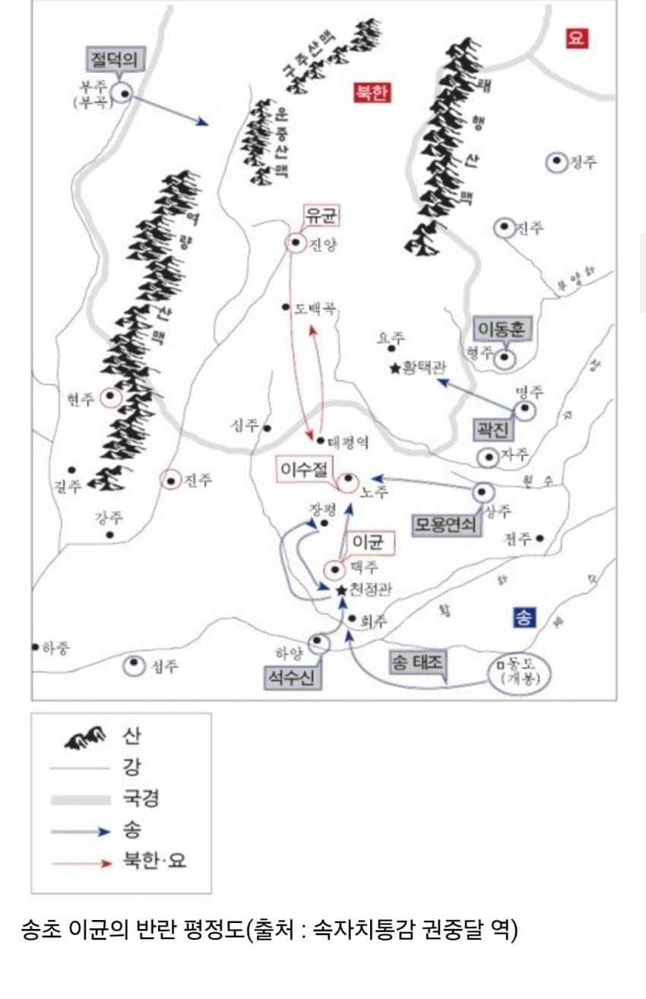
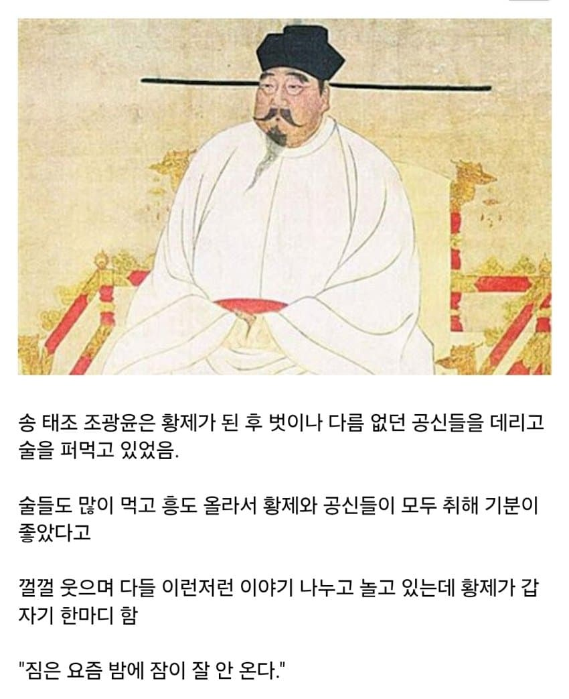
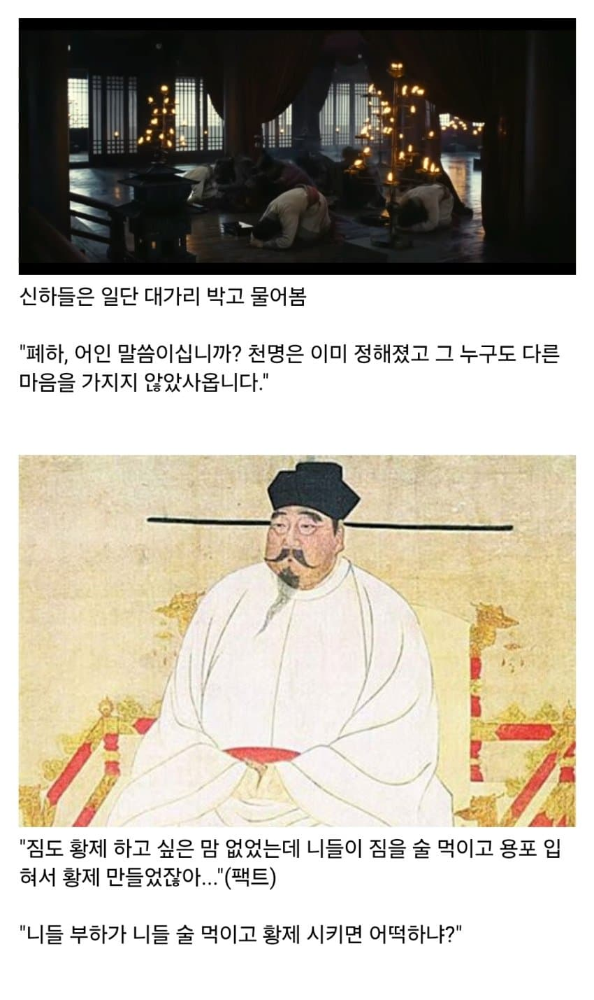
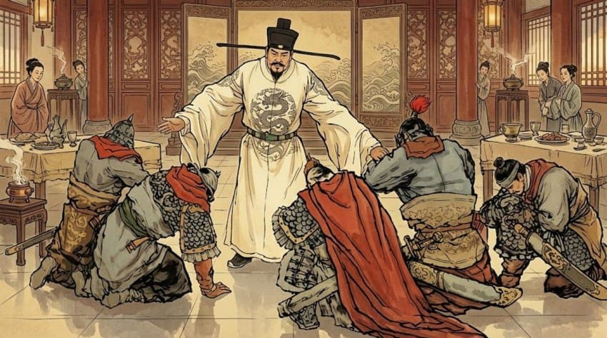
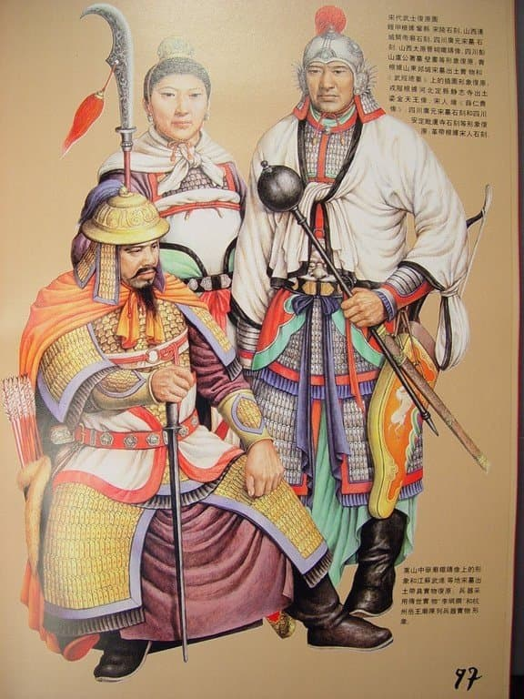

송나라를 세우고 제위에 오른 황제 태조 조광윤이 이균과 이중진의 반란을 진압한 이후 일어난 일이다.




이것이 바로 배주석병권(杯酒釋兵權) 사건이다

송 태조 조광윤이 군권을 쥔 부랄 공신들을 차마 숙청하기는 뭣해 고민하다가 내놓은 해결책이었는데
군주가 "솔직히 난 니들 반란 일으킬까봐 겁난다." 라고 허심탄회하게 말하며 군권을 달라 요구하고
신하들도 황제에게 그대로 군권을 내놓은, 중국사에서 그 예를 찾아보기 어려운 평화로운 정치쇼였다.

조광윤도 이런 군인 공신들에게 재산과 영지와 관직을 대대손손 퍼주면서 은혜를 갚아줬고
남송 멸망까지 사대부들은 황실에 충성하며 목숨까지 바치게 된다.
댓글
수집 당시 댓글 247개
· ㅇㅇ · 11.26 09:18:32
· ㅇㅇ · 11.26 11:35:28
· ㅇㅇ · 11.26 13:55:07
· ㅇㅇ · 11.26 15:32:05
· ㅇㅇ · 11.26 15:35:44
· ㅇㅇ · 11.26 18:07:38
ㅇㅇ · 11.26 09:15:03
· ㅇㅇ · 11.26 10:32:34
· ㅇㅇ · 11.26 15:30:52
· ㅇㅇ · 11.26 19:25:26
ㅇㅇ · 11.26 09:16:07
· ㅇㅇ · 11.26 15:48:10
ㅇㅇ · 11.26 09:16:40
ㅇㅇ · 11.26 09:17:19
ㅇㅇ · 11.26 09:19:05
· ㅇㅇ · 11.26 09:20:51
· ㅇㅇ · 11.26 09:22:03
· ㅇㅇ · 11.26 09:22:46
· ㅇㅇ · 11.26 09:23:30
· ㅇㅇ · 11.26 09:24:16
· ㅇㅇ · 11.26 09:24:52
· ㅇㅇ · 11.26 09:25:33
· ㅇㅇ · 11.26 09:26:07
· ㅇㅇ · 11.26 09:27:01
· ㅇㅇ · 11.26 09:27:11
· ㅇㅇ · 11.26 09:28:52
· ㅇㅇ · 11.26 09:29:23
· ㅇㅇ · 11.26 09:30:05
· ㅇㅇ · 11.26 09:30:57
ㅇㅇ · 11.26 09:22:54
ㅇㅇ · 11.26 09:26:15
ㅇㅇ · 11.26 09:34:13
이분 · 11.26 09:37:45
ㅇㅇ · 11.26 09:44:52
ㅇㅇ · 11.26 09:48:32
ㅇㅇ · 11.26 10:06:31
히이잉 · 11.26 10:07:18
ㅅㅂ · 11.26 10:13:49
ㅇㅇ · 11.26 10:18:00
ㅇㅇ · 11.26 10:20:07
· ㅇㅇ · 11.26 15:28:24
· ㅇㅇ · 11.26 17:47:27
· ㅇㅇ · 11.26 17:48:14
ㅇㅇ · 11.26 10:22:33
수붕이 · 11.26 10:30:18
· ㅇㅇ · 11.26 10:45:43
· ㅇㅇ · 11.26 11:27:14
· ㅇㅇ · 11.26 15:26:50
o o · 11.26 10:41:14
ㅇㅇ · 11.26 10:41:50
ㅇㅇ · 11.26 10:54:18
04T · 11.26 10:57:19
ㅇㅇ · 11.26 10:58:45
ㅇㅇ · 11.26 11:14:14
· 2.1배TQQQ · 11.26 13:46:26
ㅇㅇ · 11.26 11:17:12
ㅇㅇ · 11.26 11:22:57
ㅇㅇ · 11.26 11:37:49
· ㅇㅇ · 11.26 11:41:17
· ㅇㅇ · 11.26 15:24:31
· ㅇㅇ · 11.26 15:25:29
ㅇㅇ · 11.26 11:43:06
ㅇㅇ · 11.26 11:47:37
· ㅇㅇ · 11.26 11:48:20
· 2.1배TQQQ · 11.26 13:45:19
· ㅇㅇ · 11.26 15:18:40
· ㅇㅇ · 11.26 15:20:00
· piyo · 11.26 18:15:18
ㅇㅇ · 11.26 12:21:21
ㅇㅇ · 11.26 12:21:45
· ㅇㅇ · 11.26 12:56:57
ㅇㅇ · 11.26 12:22:14
ㅇㅇ · 11.26 13:05:41
· ㅇㅇ · 11.26 13:06:29
· ㅇㅇ · 11.26 13:33:57
소국빵쯔인은 대국을 보고 배워🤣🤣
ㅇㅇ · 11.26 13:52:12
ㅇㅇ · 11.26 15:11:27
ㅇㅇ · 11.26 15:15:36
ㅇㅇ · 11.26 15:15:58
ㅇㅇ · 11.26 15:32:31
· ㅇㅇ · 11.26 15:48:00
ㅇㅇ · 11.26 15:55:36
ㅇㅇ · 11.26 16:00:06
Hololive만본다 · 11.26 16:10:31
ㅇㅇ · 11.26 16:25:26
· piyo · 11.26 18:13:57
· ㅁㅂ · 11.26 18:20:50
ㅇㅇ · 11.26 17:28:09
· ㅇㅇ · 11.26 17:28:39
· ㅇㅇ · 11.26 17:29:24
ㅇㅇ · 11.26 17:31:06
piyo · 11.26 18:14:07
ㅇㅇ · 11.26 18:20:50
ㅇㅇ · 11.26 18:48:37
ㅇㅇ · 11.26 19:17:39
· ㅇㅇ · 11.26 19:39:11
펜도르 · 11.26 19:18:54
ㅇㅇ · 11.26 19:55:26
ㅇㅇ · 11.26 19:56:20
ㅇㅇ · 11.26 20:32:13
· ㅇㅇ · 11.26 08:49:53
· ㅇㅇ · 11.26 08:51:08
· ㅇㅇ · 11.26 08:53:25
· ㅇㅇ · 11.26 09:01:12
· ㅇㅇ · 11.26 09:06:32
· ㅇㅇ · 11.26 09:06:41
· ㅇㅇ · 11.26 09:10:15
ㅇㅇ · 11.26 08:45:29
· ㅇㅇ · 11.26 08:46:29
· ㅇㅇ · 11.26 09:02:04
· ㅇㅇ · 11.26 09:35:03
· ㅇㅇ · 11.26 10:40:22
식물빌런 · 11.26 08:45:58
· 공정성장 · 11.26 08:47:35
· ㅇㅇ · 11.26 08:50:01
ㅇㅇ · 11.26 08:47:07
· 공정성장 · 11.26 08:48:21
· ㅇㅇ · 11.26 08:49:42
· ㅇㅇ · 11.26 12:35:04
식물빌런 · 11.26 08:47:07
· 공정성장 · 11.26 08:49:53
· ㅇㅇ · 11.26 08:53:37
멋진남자 · 11.26 08:48:14
ㅇㅇ · 11.26 08:48:21
· ㅇㅇ · 11.26 08:51:37
· ㅇㅇ · 11.26 08:54:26
· SonyXperia · 11.26 09:24:20
ㅇㅇ · 11.26 08:50:30
ㅇㅇ · 11.26 08:50:52
ㅇㅇ · 11.26 08:52:05
· ㅇㅇ · 11.26 08:52:56
· ㅇㅇ · 11.26 08:58:31
· ㅇㅇ · 11.26 08:59:47
· 공정성장 · 11.26 09:00:53
· ㅇㅇ · 11.26 09:03:11
파치카 · 11.26 08:52:44
· ㅇㅇ · 11.26 09:36:33
ㅇㅇ · 11.26 08:54:57
· ㅇㅇ · 11.26 12:24:02
ㅇㅇ · 11.26 08:55:26
· ㅇㅇ · 11.26 08:56:54
· ㅇㅇ · 11.26 08:57:53
· ㅇㅇ · 11.26 09:02:46
· ㅇㅇ · 11.26 09:02:58
· ㅇㅇ · 11.26 09:04:19
· ㅇㅇ · 11.26 09:11:36
· ㅇㅇ · 11.26 09:13:19
· ㅇㅇ · 11.26 09:15:00
· ㅇㅇ · 11.26 09:17:15
· ㅇㅇ · 11.26 09:26:09
· ㅇㅇ · 11.26 09:41:09
· ㅇㅇ · 11.26 10:16:24
· ㅇㅇ · 11.26 11:11:59
· ㅇㅇ · 11.26 11:18:30
· ㅇㅇ · 11.26 11:32:24
· ㅇㅇ · 11.26 12:00:23
· ㅇㅇ · 11.26 12:01:59
· ㅇㅇ · 11.26 12:52:54
· ㅇㅇ · 11.26 13:21:21
· ㅇㅇ · 11.26 13:54:22
히이잉 · 11.26 08:57:17
나너나 · 11.26 08:58:40
· ㅇㅇ · 11.26 11:19:50
· zz · 11.26 12:31:36
· 2.1배TQQQ · 11.26 13:43:56
· 노네임2 · 11.26 13:47:18
· ㅇㅇ · 11.26 17:03:44
ㅇㅇ · 11.26 08:58:55
· ㅇㅇ · 11.26 12:25:12
ㅇㅇ · 11.26 08:59:47
ㅇㅇ · 11.26 09:02:44
· ㅇㅇ · 11.26 09:05:59
· ㅇㅇ · 11.26 10:41:56
· ㅇㅇ · 11.26 11:39:26
· ㅇㅇ · 11.26 13:52:48
· ㅇㅇ · 11.26 15:26:51
· ㅇㅇ · 11.26 15:42:08
· ㅇㅇ · 11.26 17:04:45
베이린 · 11.26 09:03:17
ㅇㅇ · 11.26 09:04:13
· ㅇㅇ · 11.26 12:36:32
997 · 11.26 09:05:00
ㅇㅇ · 11.26 09:06:15
ㅇㅇ · 11.26 09:06:23
· ㅇㅇ · 11.26 09:07:36
· ㅇㅇ · 11.26 09:14:03
· ㅇㅇ · 11.26 12:02:37
· ㅇㅇ · 11.26 12:34:46
· ㅌㅌ · 11.26 12:46:56
· ㅇㅇ · 11.26 13:25:11
ㅇㅇ · 11.26 09:11:00
· 셱스 · 11.26 09:13:49
· ㅇㅇ · 11.26 09:15:07
· ㅇㅇ · 11.26 09:15:24
· ㅇㅇ · 11.26 11:33:27
· 노네임2 · 11.26 13:49:00
ㅇㅇ · 11.26 09:12:50
· ㅇㅇ · 11.26 09:13:37
· ㅇㅇ · 11.26 09:16:27
· ㅇㅇ · 11.26 09:17:53
쫍쫍이 · 11.24 17:19:08
· 우르반대포 · 11.24 17:20:39
· 8==> · 11.24 17:23:32
· ㅇㅇ · 11.24 17:24:24
· ㅇㅇ · 11.24 20:10:10
· ㅇㅇ · 11.24 20:10:35
· ㅇㅇ · 11.24 20:43:32
· 파치카 · 11.26 08:53:01
· 조선한이겸 · 11.26 08:58:48
· ㅇㅇ · 11.26 11:42:18
Crow · 11.24 17:21:16
· ㅇㅇ · 11.24 23:38:15
· ㅇㅇ · 11.25 00:55:50
· ㅇㅇ · 11.26 08:49:19
· ㅇㅇ · 11.26 11:43:48
개댇지 · 11.24 18:01:26
· ㅇㅇ · 11.26 09:01:32
김블러 · 11.24 18:24:20
· ㅇㅇ · 11.24 19:24:23
· ㅇㅇ · 11.24 20:03:57
· 통피제발풀어 · 11.24 21:01:34
· ㅇㅇ · 11.24 21:15:15
· 식물빌런 · 11.26 08:45:45
· ㅇㅇ · 11.26 08:52:17
ㅇㅇ · 11.24 20:09:50
ㅇㅇ · 11.24 20:10:20
· ㅇㅇ · 11.26 09:28:34
ㅇㅇ · 11.24 21:14:39
치킨트레이더 · 11.24 22:19:51
· ㅇㅇ · 11.24 23:34:28
· ㅇㅇ · 11.26 09:29:32
ㅇㅇ · 11.25 02:23:45
ㅇㅇ · 11.25 03:55:39
봇치쟝 · 11.26 08:40:57
숲은생각한다. · 11.26 08:42:57
ㅇㅇ · 11.26 08:44:38
· 냉동 · 11.26 09:28:16
· ㅇㅇ · 11.26 09:30:56
· 냉동 · 11.26 09:33:07
· ㅇㅇ · 11.26 09:38:55
· ㅇㅇ · 11.26 09:42:49
· ㅇㅇ · 11.26 12:33:18
· ㅇㅇ · 11.26 12:41:03
ㅇㅇ · 11.26 08:44:55
· ㅇㅇ · 11.26 08:59:03
· ㅇㅇ · 11.26 09:32:51
ㅇㅇ · 11.26 08:45:13